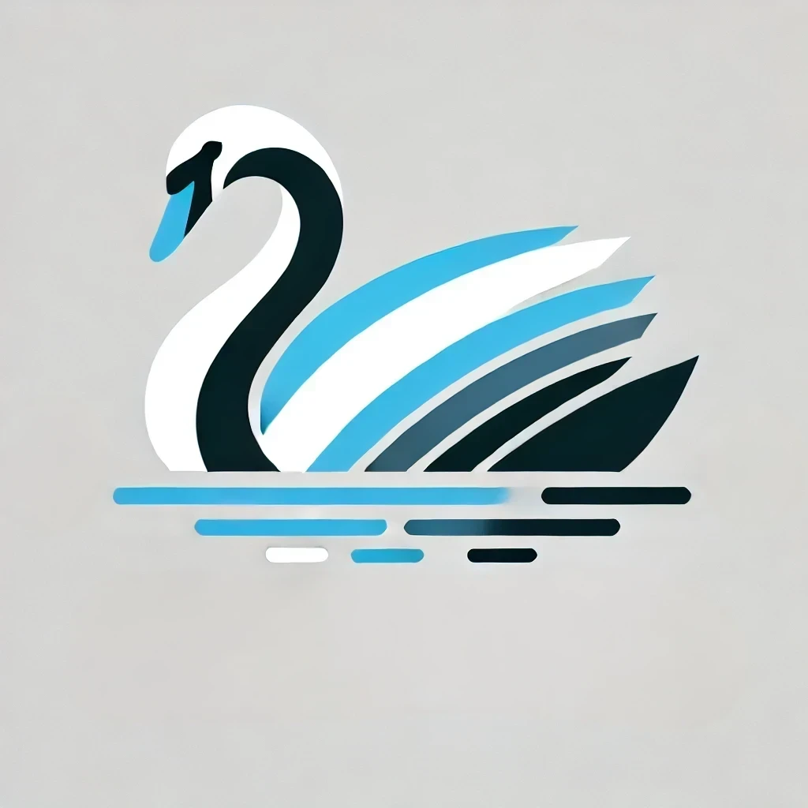

{{ headContent() }}
SWANr Shiny — Dados e análises do SWOT (coleção D) + OPERA (DSWx) + ANA (RHN)

SWANr
Dados e análises do SWOT (coleção D) + OPERA (DSWx) + ANA (RHN)
América do Sul
Camadas
Consulta
Análises
Resultados
Manual
Projeto
Referências
Satélite
Ruas
{{ download_link }}